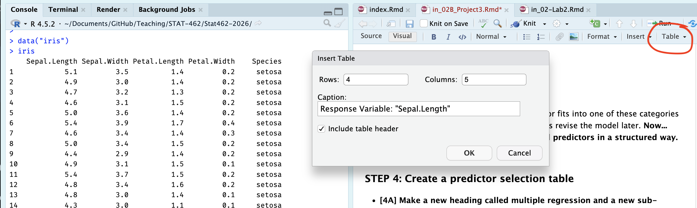
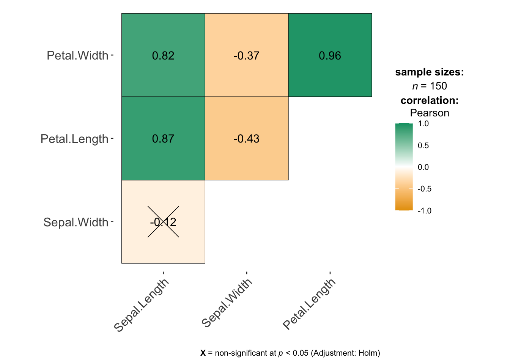

Project 3
Aim of project 3
In simple linear regression, we used one predictor to explain or predict a response. In this lab, we move to multiple linear regression (MLR), where we use two or more predictors.
The good news is that most of the ideas from simple linear regression still apply. We still fit a line-like model, interpret coefficients, check the LINE assumptions, and think carefully about when the model is useful. The main difference is that each slope now tells us the relationship between a predictor and the response while holding the other predictors constant.
By the end of this lab, you should be able to:
identify the response variable, predictor variables, and unit of observation in a multiple regression setting
fit and interpret a multiple linear regression model and explain the coefficients
Explore goodness of fit (\(R^2\) , adjusted \(R^2\), overall F-test and the t-tests for individual slopes
Assess the LINE assumptions
Use the model to make predictions
The Canvas page for this lab is:
If the labs are causing major problems with your computer, or your hardware is struggling, please talk to Dr Greatrex. Remember that you can always use RStudio Cloud.
Lab Set-up
You are going to be continuing to edit your lab book from project 1 and project 2.
STEP 1: Re-open your project by either
Going to your project folder and double clicking on the .RProj,
Opening R studio and going to File, Recent Projects, the open the one for your independent
Clicking on the project in Posit-cloud online
STEP 2: Re-open your lab-book and make some checks
-
[2A] Check everything runs.
Go to the files tab and open your lab-book RmD file.
On the top right, go to the run menu and press Run-All. Everything should run without errors.
Look at your environment tab and consider renaming your variables if they don’t make sense to you.
-
[2B] Check it knits and look at your report structure.
Now press knit. If it doesn’t work, look carefully at the error because it will tell you the line of code that broke and exactly why.
Imagine you are me. Is it easy to click through the table of contents and find each sub-section in your work? If not, review what you have done so far and add more headings/sub-heading/sub-sub-headings etc..
Are all your library commands in a code chunk at the top, with message=FALSE and warning=FALSE as code chunk options? If not, move them there and set the options (see rmarkdown tutorial)
Remember, you lose marks for things like poor headings, missing sections, or submitting an unpolished document. (anything that makes it hard for me to find your answers).
(Intelligently) choose your list of predictors
STEP 3: Read this BEFORE moving on.
In Project 2 you fitted a simple linear regression model using one predictor variable. Now you will extend that earlier model by including additional predictors from your dataset.
A natural question at this stage is: “Should we include every possible predictor in our initial model?”. The answer is no. Not every variable (column) in a dataset is suitable as a predictor. Including too many variables can make models harder to interpret and can introduce several common modelling problems.
Types of variables/columns that should NEVER be chosen as predictors include:
Descriptive or ID variables: These exist only to identify observations and organise your data, rather than explaining your response. Examples include variables such as
StudentID,MovieID,zip-code, orCountyFIPS.Unstructured text variables: Columns such as
notes,comments, oraddressshould not be used as predictors. The only text-like variables you should include are categorical (factor) variables.Variables calculated directly from the response variable: These create circular reasoning. For example, do not use
log(height)to predictheight.
Types of variables/columns that should usually be avoided for an initial model include:
-
Predictor variables without a plausible causal link to the response It is easy for a variable to look related to your response even if there is no sensible real-world mechanism connecting them. For example, I cannot think of a reason why
student_ear_lengthwould affectstudent_STAT462_gradein real life.- For this first model, we want to avoid these spurious predictors as much as possible. A good rule of thumb is that your imaginary client should recognise your chosen predictors as reasonable explanations of the response variable.
-
Predictor variables that are highly related to each other
For example, imagine you are forecasting
total_profitof cinema releases. If bothglobal_salesandregional_salesof a movie are strongly related to each other, we’re not adding new information to the model by including both as predictors.- In this case, it is usually better to start with only one of them as a predictor, before trying to separate their individual effects in later models.
-
[FOR THIS STAT 462 PROJECT ONLY]: categorical variables with many categories. Variables with many factor levels make the regression output much harder to interpret.
- For this first model in STAT 462, focus on predictors that are numeric or simple categorical. (4 levels or less)
Note, if you are unsure about whether a predictor fits into one of these categories then it is usually fine to include it. We can always revise the model later.
Now… follow these instructions to select your initial predictors in a structured way.
1.2.1 STEP 4: Create a predictor selection table
-
[4A] Make a new heading called multiple regression and a new sub-heading called ‘choose predictors’.
- Hint, before you start, the names() command might help you remember whats variables are in your the dataset, or View the data in a new tab.
-
[4B] Create a blank table.
- Click on visual mode. In your report, make a table of size: 5 columns, and one row for each of the variables in your dataset.
-
To make this project fair on people with many predictors, IF your dataset contains more than about 8 possible predictors/columns,
- For this exercise, just choose your 6-8 most promising candidates based on your earlier exploratory analysis and make the table for those.
- For example if I was using the iris data in my project, I might have

[4C] Label the table’s column headings: Name | Type of Data | Causal Link with response | Duplicate information | Correlation coefficient
[4D] Fill in the name column: with the name of each potential predictor variable.
Your table should look like this but for your data rather than iris:
| Name | Correct data format | Causal Link with response | Duplicate information | Correlation coefficient |
|---|---|---|---|---|
| Sepal.Width | ||||
| Petal.Length | ||||
| Petal.Width | ||||
| Species |
1.2.2 STEP 5: Check each predictor
Note, you don’t need to mark the values in the table exactly as I worded as long as it’s clear what you mean.
-
[5A]. First check if each predictor is is suitable for regression. The easiest way to do this is to use the str() command. In your table:
If your variable is numeric, mark TRUE/Yes under ‘Correct Data Format’
If it’s descriptive/notes/unstructured text, mark FALSE/No under ‘Correct Data Format’
If its categorical/factor, with less than 4 or 5 levels/options, mark TRUE
If its categorical/factor, with more than 4 or 5 levels/options, mark FALSE.
For example, for the iris data, I can see that three of my columns are numeric and Species is categorical with three potential categories. (see table at the end of step5 for how I recorded this)
str(iris)## 'data.frame': 150 obs. of 5 variables:
## $ Sepal.Length: num 5.1 4.9 4.7 4.6 5 5.4 4.6 5 4.4 4.9 ...
## $ Sepal.Width : num 3.5 3 3.2 3.1 3.6 3.9 3.4 3.4 2.9 3.1 ...
## $ Petal.Length: num 1.4 1.4 1.3 1.5 1.4 1.7 1.4 1.5 1.4 1.5 ...
## $ Petal.Width : num 0.2 0.2 0.2 0.2 0.2 0.4 0.3 0.2 0.2 0.1 ...
## $ Species : Factor w/ 3 levels "setosa","versicolor",..: 1 1 1 1 1 1 1 1 1 1 ...-
[5B]. Assess whether each predictor is a reasonable explanation of your response variable.
This is based on your real-life knowledge of the topic, and your earlier exploratory analysis, NOT on the correlation coefficient.
-
Record one of the following in your table for each potential predictor
- reasonable | maybe | unlikely
- reasonable | maybe | unlikely
-
For example: If my response variable was house price
square footage → reasonable predictor
number of birds on the roof at midday yesterday → unlikely predictor
For the iris data I had to google this because I don’t know much about iris flowers! It appears that sepel.width (width of part of the green bit under the iris petals), petal width, petal length and species are all reasonable real-life predictors of sepal length.
-
[5C]. Check whether numeric predictors are trivially linked to the response variable or contain duplicate information.
For example: is the predictor is calculated from the response variable. For example, If your response variable is
profit_USD, trivial predictors are things likeprofit_Euroorprofit_margin.-
Or is the predictor is too similar to an another predictor variable? Here, just focus on ones that have an almost perfect correlation between each other (say, global sales and local sales). In your table:
Enter NA if it’s categorical
Enter Direct-calculation if something is literally calculated from another variable (profit in euros vs profit in gbp)
Enter strong link if there’s almost a perfect correlation (0.95+) between two variables and it it makes sense that they are related.
Otherwise enter something like “OK”.
The easiest way to think this through is by looking at the correlation matrix. Feel free to reprint it in your lab report rather than having to scroll up and down a lot.
For example in my iris data, I can see that there’s no direct-calculations, but there is a VERY strong link between petal length and petal width. So in this, case I might start with only one of the petal variables.
# this is from the ggstatsplot package,
# remember to run your library code chunk first.
ggcorrmat(iris)
-
[5D]. Check if there’s show at least a weak-to-moderate relationship with the response variable
We can still include these in a model (maybe the effect is more subtle), but it makes sense to start with variables with a stronger relationship.
In the table, for numeric variables, write down the correlation coefficient, or refer to your exploratory analysis if you already made a scatterplot (e.g. write strong relationship, weak relationship?)
Final example iris table:
Your table should look like this but for your data rather than iris:
| Name | Correct data format | Causal Link with response | Duplicate information | Correlation coefficient |
|---|---|---|---|---|
| Sepal.Width | Yes | Yes | No | -0.12 |
| Petal.Length | Yes | Yes | Strong link with petal-width | .87 |
| Petal.Width | Yes | Yes | Strong link with petal-length | .82 |
| Species | Yes (categorical) | Yes | No | NA |
1.2.3 STEP 6: Use the table to decide on your first set of predictors
-
[6A]. Using your completed table and the criteria above, select:
Your response variable from Project 2
The predictor from Project 2
At least 2 additional predictors (try not to go above 5 additional predictors or you give yourself a lot more work)
-
[6B]. Under your table, write a short paragraph for your client explaining:
which predictors you selected
why you selected them, refering to the table above
which predictors you chose not to include
why they were excluded
- Your goal is to demonstrate that your model choice is intentional and based on evidence from your dataset.
Finally, here’s my iris example:
Using the table above, I selected Sepal.Width, Petal.Length, and Species as predictors of my response variable Sepal.Length. All three variables are measured for the same flowers as the response variable and are either numeric or simple categorical variables, so they are suitable for use in a multiple regression model.
Based on my exploratory analysis and some background reading about iris flowers, each of these variables is a reasonable explanation of variation in sepal length. In real plants, different parts of the flower tend to grow together as part of the same overall structure, so measurements such as petal length and sepal width are likely to be related to sepal length and species impacts plant size.
Petal.Length showed a strong relationship with sepal length in the scatterplots and correlation matrix. This was also my predictor variable from Project 2. Sepal.Width showed a weaker relationship with the response variable, but it is still a sensible estimate of what might impact sepal length. and the species variable captures biological differences between flower types that affect their overall size and shape.
I chose not to include Petal.Width in this first model because it is very strongly related to another predictor Petal.Length and provides similar information. Including both variables at this stage would make the model harder to interpret without clearly improving it.
1.4 STEP 7: Fit your first multiple linear regression model
You will now fit your first multiple linear regression model using:
Your chosen response variable from Project 2
All of your chosen predictors.
To do this, use the structure below, but replace the variable names with the column names of your chosen variables. You may also use summary(FullModel) if you prefer.
FullModel <- lm(ResponseVariable ~ Predictor1 + Predictor2 + Predictor3,
data = yourdataset)
ols_regress(FullModel)For example, for the iris data.
FullModel <- lm(Sepal.Length ~ Sepal.Width + Petal.Width + Species, data = iris)
ols_regress(FullModel)1.5 STEP 8: Questions
Using sub-headings to make your answers really easy to find.. answer the following questions in full sentences.
-
[8A]. Model size and structure
What is the sample size n?
How many predictors are included in your model?
How many parameters are being estimated in total, e.g. how many Betas including the intercept?
-
[8B]. Model size and structure
Write out the estimated regression equation for your sample, ideally using the LateX equation format.
-
Your equation should clearly show:
the estimated intercept
all estimated slope coefficients
Either include or refer to the names and units of your variables
-
[8C]. Model coefficients
Choose at least two slope coefficients and the intercept and interpret them carefully in context of your project dataset.
Also comment on whether the intercept has a meaningful real-world interpretation for your dataset.
-
[8D]. Interpret model fit
-
From the model summary, report and interpret:
R²
adjusted R²
-
Explain your own words:
What does R² mean in your model?
Why is the adjusted R² lower, how does it work and why is it useful?
-
1.5.1 E. Interpret the hypothesis tests
Use the output to answer the following:
What does the overall F-test tell us? State the null and alternative hypotheses in words.
Based on the output, is there evidence that your predictors are useful overall for explaining variation in your response variable?
For each slope t-test, what is being tested?
Which predictors appear to be significantly related to your response variable after controlling for the other predictors?
You do not need to show formal hypothesis-testing steps, but your written interpretation must be statistically correct.
This part is important because the textbook distinguishes between:
the overall F-test, which asks whether at least one slope is non-zero
the t-tests for individual slopes, which ask whether one predictor contributes after adjusting for the others
1.6 STEP 8: Check the model assumptions
As in simple linear regression, the multiple regression model relies on the LINE assumptions:
Linear relationship
Independent errors
Normal errors
Equal variance of errors
In multiple regression, these assumptions apply to the errors at fixed values of the predictors.
Use the code below to assess the assumptions and look for unusual or influential points.
ols_plot_resid_fit(FullModel)
ols_plot_resid_stud(FullModel)
ols_plot_resid_stand(FullModel)
ols_plot_resid_hist(FullModel)
ols_test_normality(FullModel)
ols_plot_resid_qq(FullModel)
ols_plot_resid_lev(FullModel)In your write-up, comment on the following:
Does the residuals-versus-fitted plot suggest that the linearity assumption is reasonable?
Does the residual spread look roughly constant?
Do the histogram, QQ plot, and normality test suggest that the residuals are approximately normal?
Are there any potentially influential observations?
Overall, do you think the model is adequate for your dataset?
Do not try to fix the model yet. Just describe what you see and explain whether you are comfortable using the model.
1.7 STEP 9: Scope of the model and practical use
A regression model should only be used within the scope of the model, meaning for predictor values that are reasonably represented by the data used to fit it.
Answer the following in a short paragraph each:
Would you feel comfortable using this model to describe the average response for observations similar to those in your dataset? Why or why not?
Would you feel equally comfortable using this model to predict the response for a new observation? Why or why not?
In your answer, think about both:
the regression assumptions
the difference between explaining average patterns and predicting individual outcomes